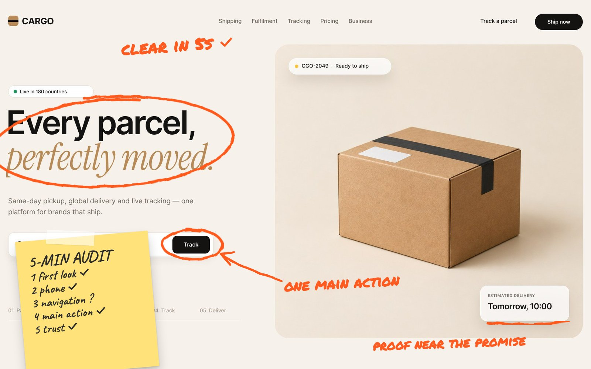
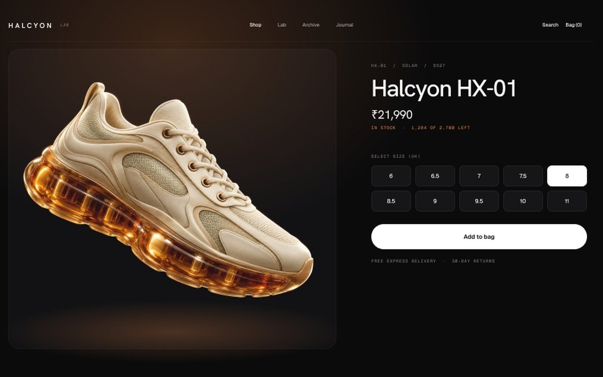
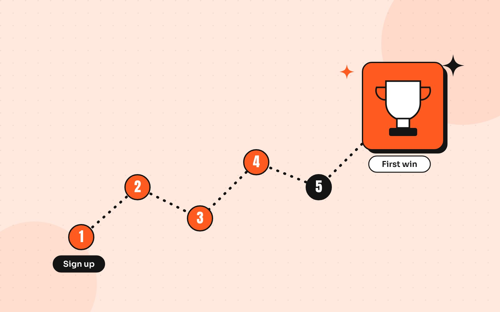
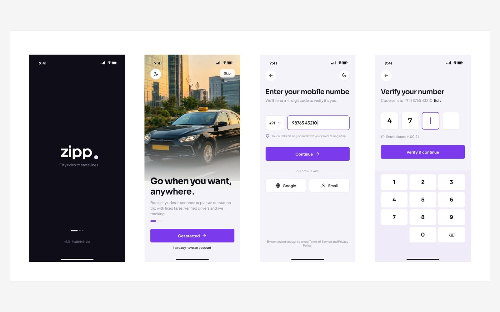
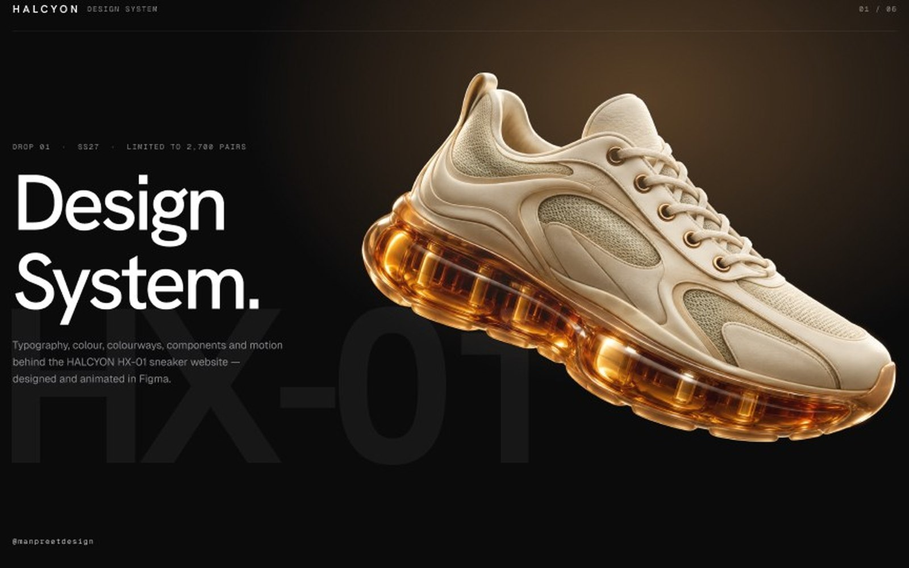
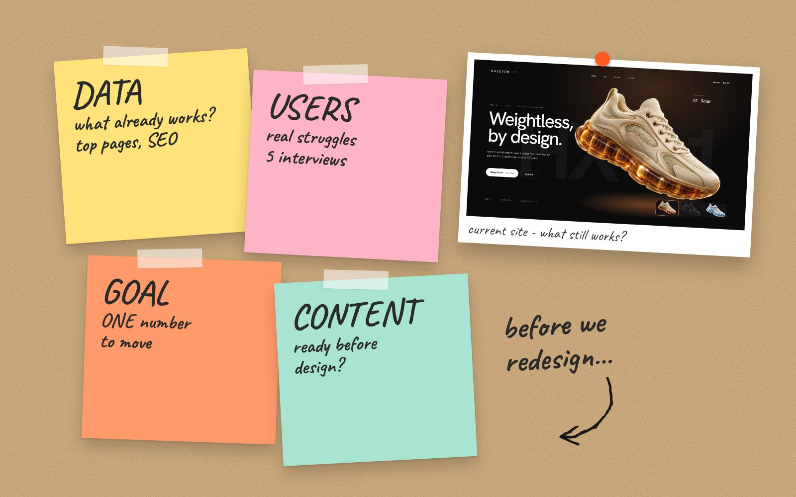

THE BLOG
DESIGN READS. - UI/UX design blog: SaaS, e-commerce, mobile apps and conversion
Practical UI/UX guides for founders, SaaS teams and agencies: conversion, dashboards, onboarding and design systems.

What I Check in a 5-Minute UX Audit
You don’t need a week to spot the biggest UX problems. Here is exactly what I look at in the first five minutes, minute by minute.

What Is a White-Label UI/UX Design Partner? A Practical Guide for Agencies
More projects without more hires. Here’s how white-label design partnerships work, and how to pick the right partner.

The UX Audit Checklist: 25 Things I Check Before Redesigning a Product
Before redesigning anything, I run this checklist. It shows what’s actually broken, so you fix the right things first.

4 Small Checkout Details That Cost You Sales
Shoppers who reach checkout already want to buy. These four small details are often what stops them and each one is quick to fix.

10 Landing Page UX Fixes That Lift Conversions Without a Redesign
Before you rebuild your landing page, try these ten fixes. Most take an afternoon and make a measurable difference.

SaaS Onboarding: How to Get Users to Their First Win Faster
Users don’t sign up for your product. They sign up for a result. The faster they get their first win, the more likely they are to stay.

Mobile App Onboarding UX: How to Turn First-Time Users Into Regulars
The first two minutes decide whether people keep your app. Here’s how I design onboarding that gets users to value fast.

5 Rules for Thumb-Friendly Mobile App Design
Your app is used on a bus, in a queue and with a coffee in the other hand. These five rules make it easy to use with one thumb.

Freelance UI/UX Designer vs Agency: Which Is Right for Your Startup?
Both can be the right choice. Here’s an honest comparison so you can pick based on your project, not on a sales pitch.

Why Startups Need a Design System Earlier Than They Think
Most startups wait until the product is a mess before building a design system. Starting small and early is cheaper, faster and kinder to your developers.

Figma Design Systems for Startups: When You Need One and How to Start
You don’t need a 200-page design system. You need the right 20 components, and a way to keep them tidy.

5 Signs Your SaaS Dashboard Is Confusing Users (and How to Fix Them)
Your dashboard can be full of useful data and still leave people lost. These five signs tell you it’s time to simplify, with a fix for each one.

SaaS Dashboard Design: 9 Principles That Make Complex Data Simple
A dashboard isn’t a wall of charts. Here are the principles I use to design SaaS dashboards people open every morning.

What Visitors Must Get in 5 Seconds on Your Landing Page
Visitors make up their minds before they scroll. Here are the four things your hero section must say in five seconds and a simple way to test it.

7 Signs Your Shopify Store Needs a Redesign (and What to Fix First)
Traffic is coming in but sales aren’t? These are the warning signs I look for first, and the fixes that usually pay off fastest.

Check These 4 Things Before You Redesign Your Website or App
A redesign can double your results or quietly break what was working. Before you change a single pixel, check these four things.

Why the UI Is Step 6, Not Step 1: The UI/UX Design Process Explained
Pretty screens feel like progress, but they are the most expensive place to start. Here is the order I actually design in and why the UI waits until step six.
No articles in this topic yet. New ones are on the way.